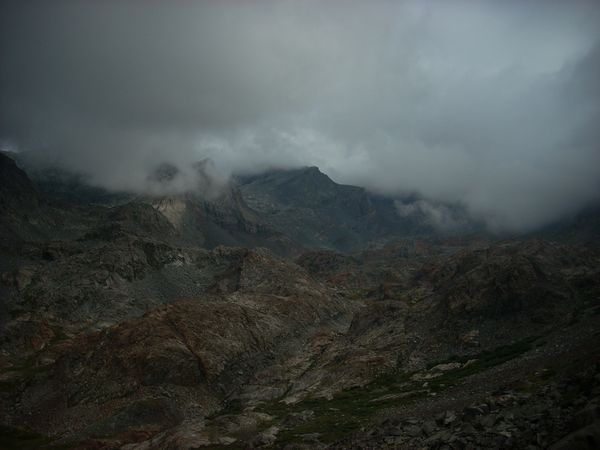
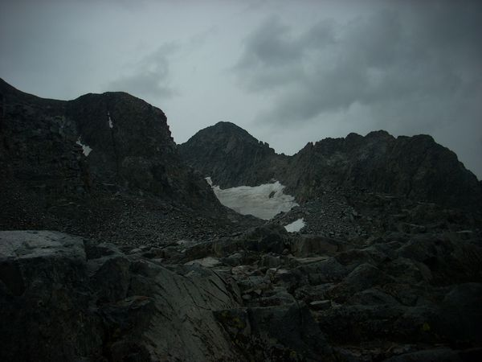
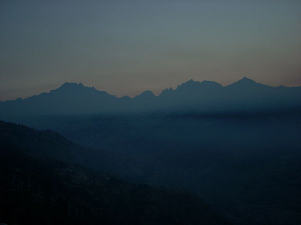

 Mt. Ritter Failed Attempt on Mt. Ritter - Walkout I woke up and headed out just as fast as I could, the soaking wet sleeping bag meant that I was less miserable once I was hiking out. I started before the sunrise
 Mt. Ritter Failed Attemp on Mt. Ritter - The Climb The day of the climb, I woke up really early and headed up the mountain. It was hard going with lots of talus and rubble. I made it up to the final lake
 Mt. Ritter Failed Attempt on Mt Ritter - The Approach At the end of the summer of 2014, after I had been working at Summit Adventure in Bass Lake, California, I set off to climb Mt. Ritter by myself.The first day I